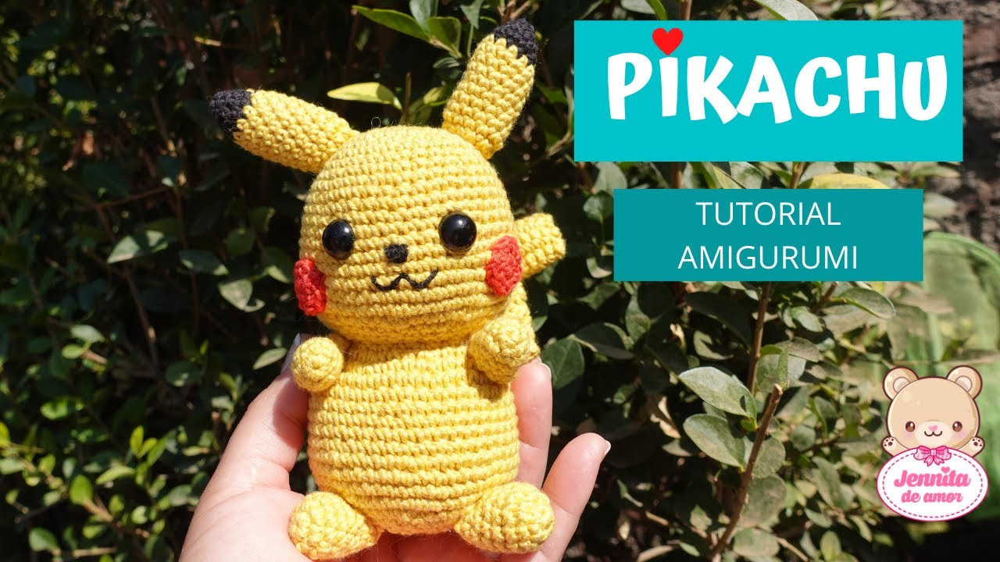

Sobre mi
Hola!, mi nombre es Oriana Lujan Aldana Tarraga. Estudiante de Ingenieria de Sistemas.
Me gradué en 2020 de la secundaria en la ciudad de Tarija, misma en la cual estoy haciendo mis estudios universitarios.
Desde niña me ví interesada en la tecnología, solía jugar videojuegos bastante seguido, lo cual me hizo interesarme en como funcionaban ese tipo de programas.
Al graduarme descubrí que sin darme cuenta, toda mi vida he amado la tecnología por lo cual quería dedicarme a eso profesionalmente.
Los campos de mayor intereses para mi son programacion y diseño web.
Trabajo en mis ratos libres para obtener un poco de dinero para mis gastos propios, cuido niños, y practico lo aprendido en la universidad en diversas actividades.
Pasatiempos
Cuando no estoy estudiando o trabajando, mi pasatiempo favorito es jugar videojuegos, me gusta despejar mi mente y relajarme con mis amigos.
Otra cosa que difruto bastante tambien es ver anime o peliculas de terror.
Soy una persona que tiende a estresarse con facilidad por lo cual suelo realizar actividades que me ayuden a lidiar con el estres, como por ejemplo, tejer.
Me gusta tejer peluches, tambien conocidos como amigurumis, gorros, guantes, etc. No los vendo, los tengo ahi decorando mi habitación.
Aprendi a tejer mediante tutoriales en Youtube, no es complicado pero requiere práctica.
